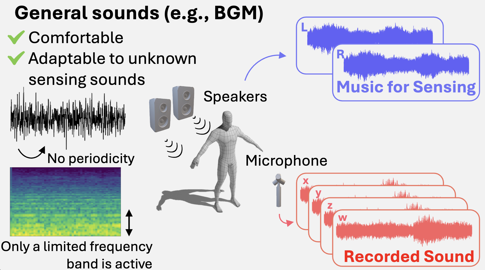
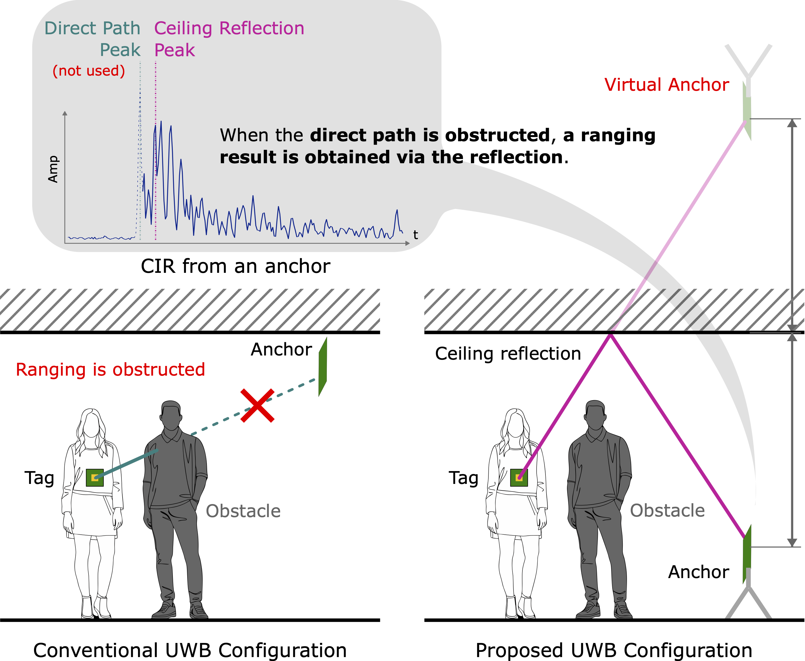
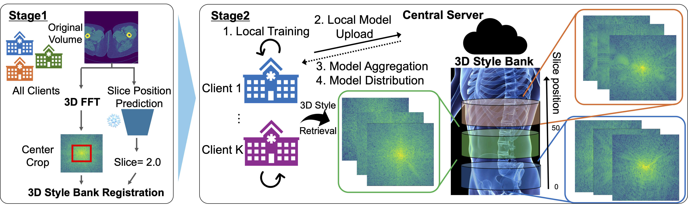
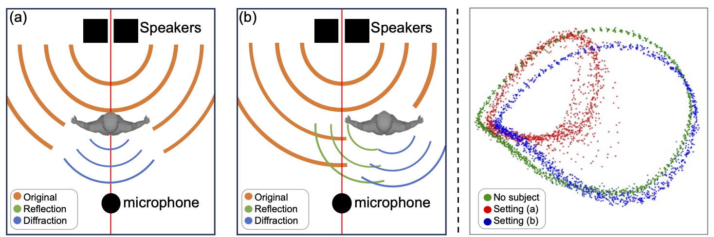

PhD Student @ Keio University · Visiting @ CMU
I am a PhD student at Aoki Lab, Keio University, advised by Prof. Yoshimitsu Aoki and Dr. Mariko Isogawa.
I am staying at Carnegie Mellon University under Prof. Katerina Fragkiadaki, conducting research on human motion and physics simulation.
My research interests include computer vision, human motion modeling, robotics, and wireless human sensing.



